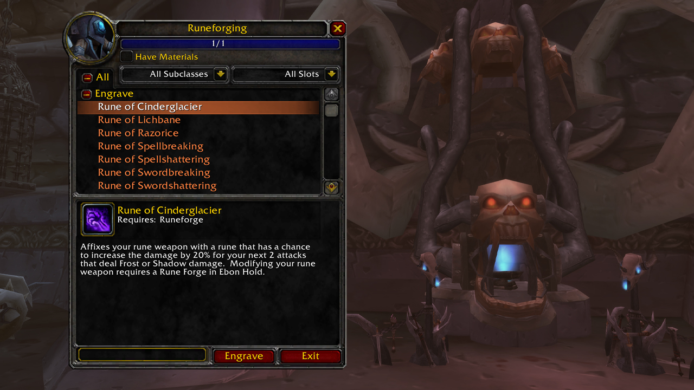
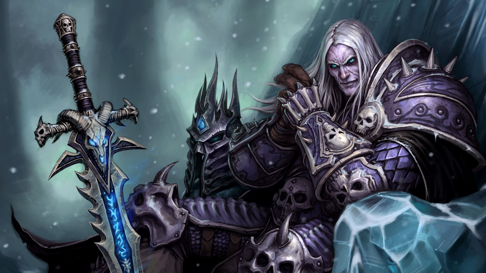

Welcome to the latest World of Warcraft news and update roundup
Ominus portents gust in on icy winds blowing into Azeroth from the cold lands of Northrend. The Lich King's undead forces are on the move, and heroes are needed once more to stem the tide of the Scourge before it's too late. With the release of the Wrath of The Lich King pre-patch, players can create their first Death Knight Hero class, take up the way of the scribe with the new Inscription Profession, and experience a host of new system updates.
Become a Death Knight
The Lich King's armies present an ever-present threat to all life on Azeroth. Some of his most terrifying servants are known as Death Knights—unliving instruments of the Lich King's will.

Unlike mindless Scourge puppets such as ghouls and skeletons, a Death Knight is a former hero of Azeroth that's been risen into undeath to serve the Lich King for all eternity. As World of Warcraft's first Hero Class, they start at a higher level than other classes, and start their journey in a class-exclusive introductory experience.
Death Knight Features
Presences
A Death Knight can shift between three different Presences, each granting a personal benefit. Only one Presence can be active at a time. New Death Knights start with Blood Presence and learn the remaining Presences through leveling.
- Blood Presence: Increases damage dealt by 15% and heals you by 4% of non-periodic damage dealt.
- Frost Presence: Increases Stamina by 8%, increases armor contribution from items by 60%, reduces damage taken by 8%, and increases threat generated.
- Unholy Presence: Increases attack speed by 15%, movement speed by 15%, and reduces the global cooldown on all abilities by 0.5 seconds.
Runeforging
Death Knights have access to a unique way to enhance their weapons called Runeforging. Runeforging is done at a Runeforge (an easily accessible one can be found at Acherus, the Ebon Hold). Such weapon enhancements do not stack with normal weapon enchantments; rather they are a way for Death Knights to obtain exclusive effects that cater more to their class and playstyle choices.
Welcome to the machine
After selecting your Death Knight's race, hair style and color, body type, and the hardest choice of all—the name—you're now ready to dominate Azeroth. There's only one small detail: you're still bound to the Lich King's will. All that's left for now is for you to do what any other freshly raised undead minion of the Lich King would: obey unquestioningly.
